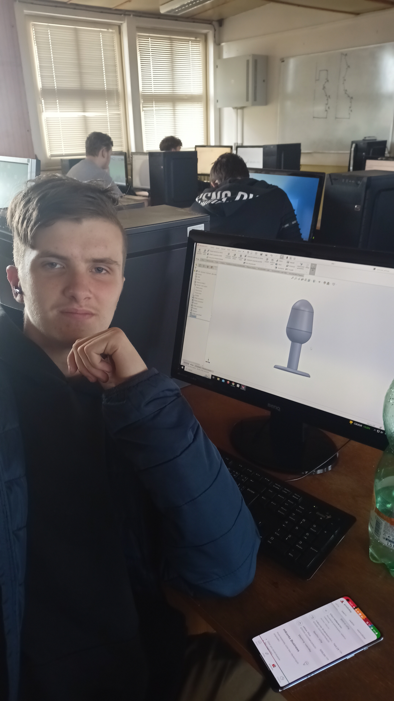
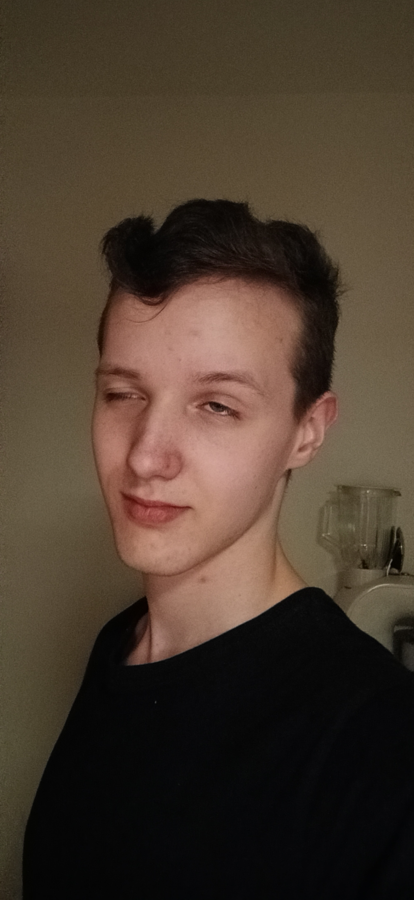
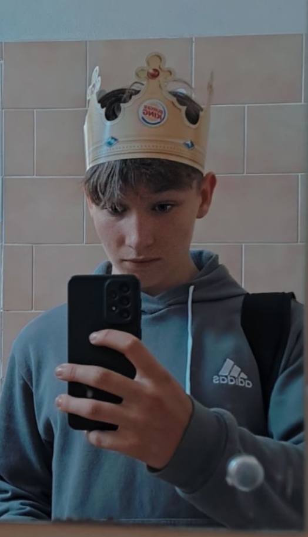

Fullstack Developer
Jakub je fullstack developer se zkušenostmi v HTML, CSS a JavaScriptu. Avšak přes své 20leté zkušenosti v JavaScriptu upřednostnil PHP.
Fullstack Developer
Páťa má 80leté zkušenosti s programováním v C#, JavaScriptu a Javě.
Frontend Developer
Adam je certifikovaný Redstone engineer a schopný vůdce naší programátorské sekty, má 40ti leté zkušenosti v Pythonu.
Frontend Developer
Tobiáš je náš frontend developer se skvělými nápady a schopnostmi je zrealizovat v HTML a CSS. + má neskutečný rizz.